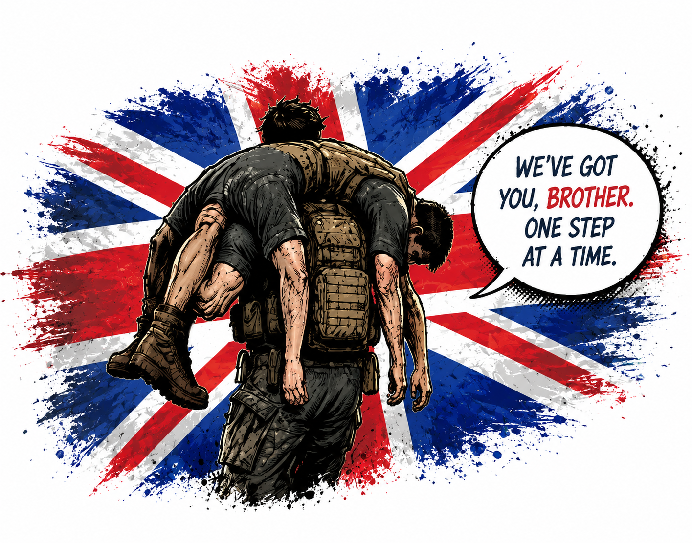
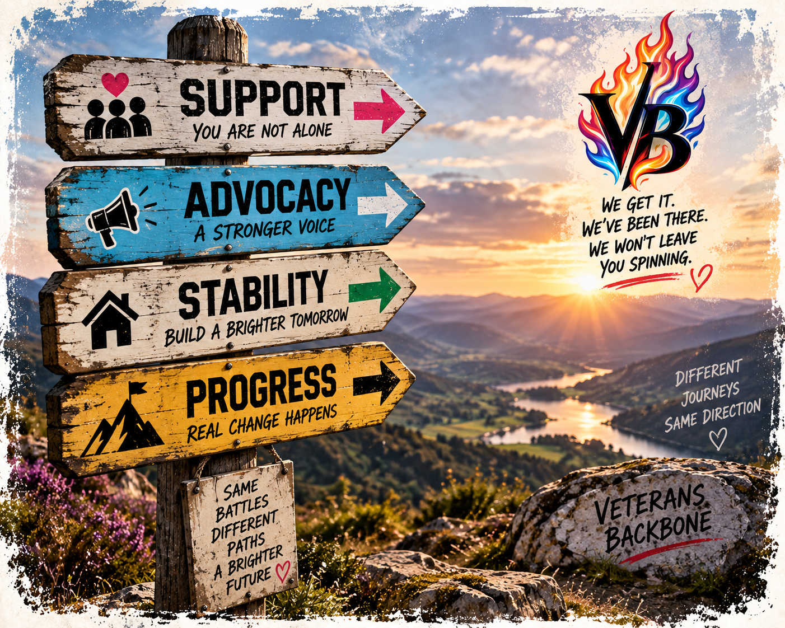
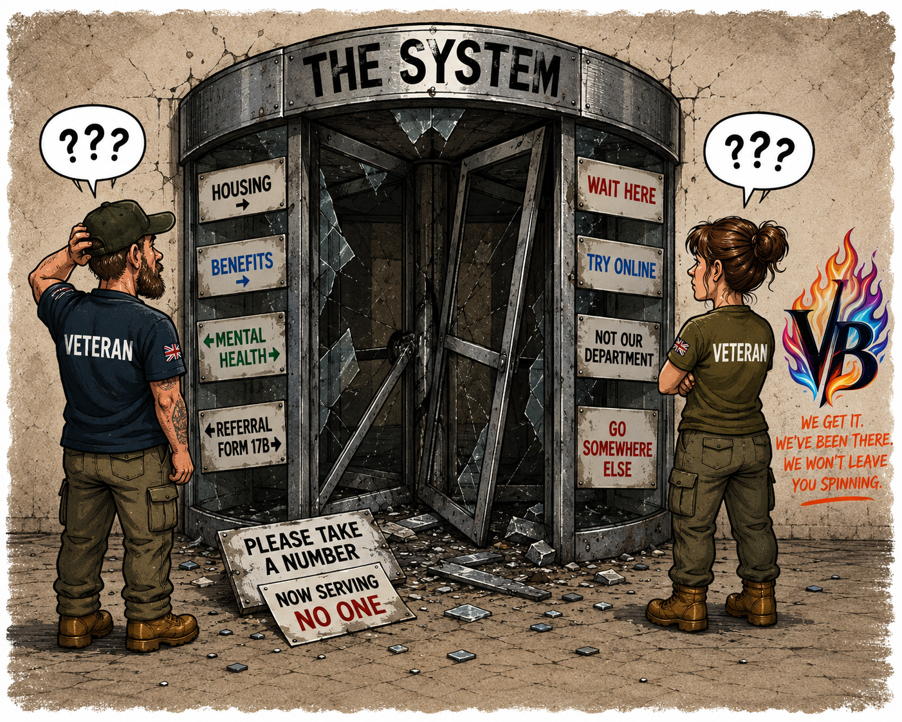

Local Leadership
Each future site would have its own appropriate leadership and management structure.
Veterans Backbone is being designed with the possibility of growing beyond one location, without turning every local service into a clone run from somewhere else.
Our proposed model would give local organisations freedom over day-to-day decisions while working within agreed standards.
This is a future development concept, not a live licensing scheme. Veterans Backbone is not yet a registered charity, has no operating sites and has not launched a licensed-site network.

There are currently no licensed Veterans Backbone sites. Our first priority is establishing the organisation and its initial community-based support service.
If a future network is formally introduced, verified participating sites and their contact information will be published here.
Build it properly first. Grow it second.
In our proposed model, a licensed site would be locally operated while following agreed safeguarding, governance, accountability and ethical standards attached to the Veterans Backbone name.
The local team would manage its own operations.
Veterans Backbone would be responsible for the agreed framework and appropriate oversight, subject to formal arrangements.
Rules of the road. Not hands on the steering wheel.

Local teams shouldn't need to phone headquarters every time somebody needs a new box of teabags.
These are proposed principles for future affiliated sites, not descriptions of sites currently operating.
Each future site would have its own appropriate leadership and management structure.
Local organisations would manage their people within agreed lawful and safeguarding standards.
Services would reflect local needs while staying within the agreed scope and standards.
Financial responsibilities and spending authority would be clearly defined in formal arrangements.
Local teams could build appropriate relationships with organisations in their area.
Every site could have its own personality without abandoning shared principles.
If a future licensing model is introduced, use of the name would come with clear responsibilities.
Safe practice would be non-negotiable.
People before ego, reputation theatre or convenience.
Local flexibility would sit within clear shared requirements.
The name should mean something. We'd intend to keep it that way.
Risks to safe and stable support should be identified early.
Problems don't disappear because nobody wants to talk about them.
The proposed model isn't about micromanaging independent teams. Any future agreement would need to define the actual boundaries of each organisation's powers and responsibilities.
Routine spending would ordinarily remain a local responsibility.
Suppliers and staff would ordinarily be managed locally.
Local services wouldn't all need to look identical.
Shared safeguards would still apply.
Guardianship. Not domination.
Our proposed approach is supportive oversight, with escalation and formal intervention determined by lawful agreements and the seriousness of a concern.
Safeguarding risks aren't being managed.
Serious ethical concerns arise.
A site repeatedly drifts from agreed standards.
People feel unable to raise concerns safely.
There is a serious continuity or financial risk.
Legal or regulatory problems emerge.
Personal data is being handled unsafely.
The aim would be to protect people, respond proportionately and restore safe local independence where possible.
These are proposed governance principles; no licensed-site oversight arrangements currently operate.

If a licensing scheme is developed, we expect it would need a properly reviewed written agreement. This process is illustrative and not open for applications.
Understand the local proposal and why an organisation is interested.
Review purpose, safeguarding, governance and suitability.
Define responsibilities, standards, reporting, oversight and exit terms.
A future approved organisation would operate within the agreed arrangement.
The proposed model anticipates local responsibility for budgets and routine financial decisions.
A future agreement would need to clarify bank-account ownership, financial controls, reporting and assurance.
These arrangements have not yet been implemented and should not be treated as contractual terms.
We're happy to discuss our longer-term ideas with people and organisations who believe in local support, strong safeguarding and honest governance.
But we're not offering licences, authorising sites or entering affiliation agreements yet.
The first job is getting Veterans Backbone established and its initial support service ready.

Future affiliated sites might develop in different ways.
Established organisations interested in a future shared model.
People considering future local veteran support initiatives.
Projects shaped by military lived experience and aligned values.
Appropriate safeguarding structures, reporting and action.
Decisions that can be explained, challenged and traced.
Responsible and proportionate financial management.
People must be able to raise concerns without retaliation.
Risks and problems should be raised early, not hidden.
The work must genuinely serve the proposed veteran support mission.
If a future affiliation relationship breaks down, any exit would need to follow agreed contractual terms and protect safeguarding, data and service continuity.
We would want an approach that is fair and proportionate, not one that traps either organisation.
Fair in. Fair out.
There is currently no licensed-site directory because no sites have been licensed.
If an approved network is established, we'll list genuinely authorised sites here.
No mystery branches. No random knock-offs. 😂
You can ask about the proposed model or share ideas for future collaboration. No licence applications are being accepted at present.